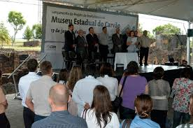
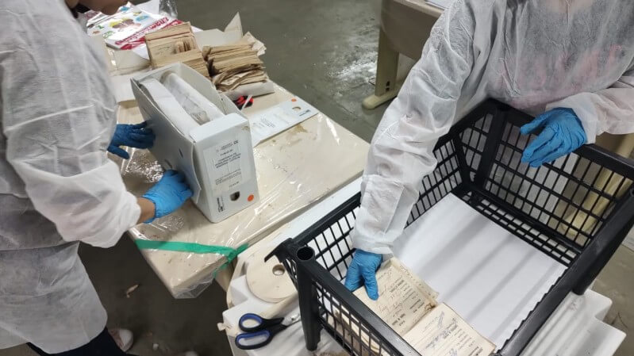
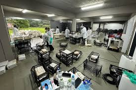
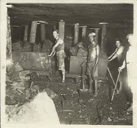

Museu Estadual do Carvão
Explore o AcervoPlaneje sua Visita
Horário
Terça a Domingo,
das 9h às 17h
Ingresso
Entrada Gratuita
Acontecendo no Museu

Educação
12 de Outubro, 2025
Visita da Escola Estadual 20 de Setembro
Estudantes exploraram as dependências da antiga usina e conheceram a história dos mineiros da nossa região em uma visita mediada.

Acervo
05 de Novembro, 2025
Nova Peça Histórica de Mineração Restaurada
Uma antiga lanterna de segurança utilizada no século XX foi integrada ao nosso acervo permanente após passar por processo minucioso de restauro.

Comunidade
18 de Novembro, 2025
Encontro Memorial de Ex-Mineiros do Jacuí
O museu reuniu antigos trabalhadores da região carbonífera e seus familiares para registrar relatos e memórias essenciais de nosso patrimônio imaterial.

Pesquisa
03 de Dezembro, 2025
Lançamento da Pesquisa de Arqueologia Industrial
Apresentamos os resultados do projeto de mapeamento estrutural das ruínas industriais da mina, realizado em cooperação com universidades parceiras.